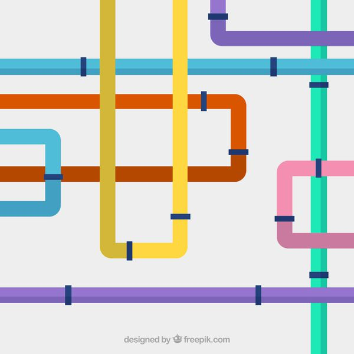
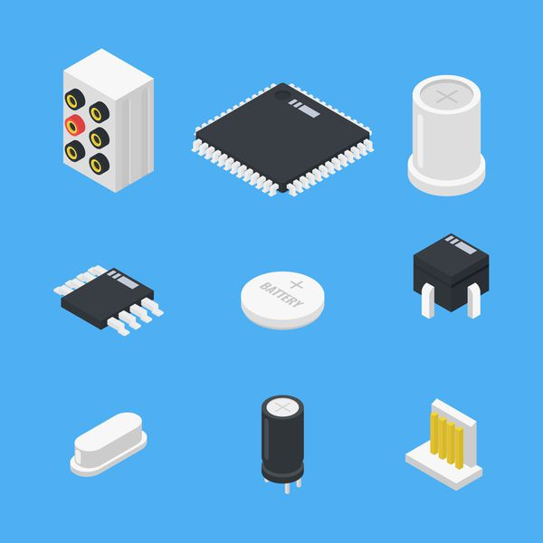

computer-architecture 5.3 The Basics of Caches The Basics of Caches Questions 데이터가 존재하는지 어떻게 확인? 우리가 어디를 보고 어디에 넣어? Directed-mapped Fully associative M-way Set associative Directive Mapped Cache 위치가 주소에 의해 결정됨 나머지 연산을 이용해 캐시 주소 결정
computer-architecture 5.2 Memory Technologies Memory Technologies (시간이 급한 관계로 몇 가지만 추려서 정리했습니다.) Memory Technology 대표적인 메모리의 종류는 아래와 같다. Static RAM(SRAM) Dynamic RAM(DRAM) Magnetic Disk SRAM -> DRAM -> Magnetic Disk로 갈수록
computer-architecture 5.1 Introduction Introduction (시간이 급한 관계로 몇 가지만 추려서 정리했습니다.) Principle of Locality 프로그램은 한 번에 작은 비율의 주소 공간에 접근한다. 그래서 다시 접근할 확률이 높은 것들에 대한 원칙을 정의하여 효율적으로 공간을 사용하는 것이 좋다.
computer-architecture 4.14 Fallacies and Pitfalls Fallacies and Pitfalls Fallacy: Pipeline is easy 지금까지 파이프라인을 잘 이해한 사람들은 어쩌면 이것이 별 거 아니라고 생각할 수도 있다. 그렇지만 지금까지 다룬 것은 파이프라인의 기본적인 개념이고, 더 세부적인 것을 고려하기 시작하면 만만치
computer-architecture 4.7 Data Hazards: Forwarding versus Stalling Data Hazards: Forwarding versus Stalling 지금까지 구현한 회로는 Hazard가 발생하지 않는 상황에서는 잘 동작한다. 하지만 실제 프로그램에서는 Hazard가 많이 발생하기 때문에 이를 처리할 수 있도록 고쳐서 조금 더 현실적인 프로세서를 만들어보자. Forwarding sub
computer-architecture 4.6 Pipelined Datapath and Control Pipelined Datapath and Control 여기서는 4.4장에서 완성했던 기존의 Single-Cycle Datapath를 Pipelined Datapath로 바꾸는 과정을 살펴볼 예정이다. 우선 회로를 아래 다섯 단계로 나누어 표시해보자. IF(Instruction Fetch) ID(Instruction Decode, Register File Read)
computer-architecture 4.5 An Overview of Pipelining(2) An Overview of Pipelining(2) Hazards Hazard란 다음 Instruction을 바로 다음 사이클에서 실행할 수 없도록 하는 상황을 뜻한다. Hazard를 해결하지 못하면 작업을 하지 않는 사이클이 발생해 Pipeline이 느리게 동작한다. Hazard의 종류를 살펴보자. Structure
 computer-architecture 4.5 An Overview of Pipelining(1) An Overview of Pipelining(1) 앞서 만든 프로세서 회로는 실제로는 거의 사용되지 않는다. 4.3의 마지막 단락은 다음과 같았다. PC는 State Element이고, 나머지는 Combinational Element이기 때문에 전체 회로를 도는 데에는 1 Clock이 소요(
computer-architecture 4.4 A Simple Implementation Scheme A Simple Implementation Scheme ALU Control MIPS의 ALU는 4 bit Control 입력에 따라 어떤 연산을 할 지 결정한다. ALU Control Function Instruction 예시 0000 AND and 0001 OR or 0010 add lw, sw,
computer-architecture 4.3 Building a Datapath Building a Datapath Datapath란 CPU에서 데이터와 주소를 처리하는 요소들을 말한다. 레지스터, ALU, MUX, 메모리 등이 Datapath라 할 수 있다. 지금부터는 lw, sw, add, sub, and, or, slt, beq, j 총 9가지 명령어를 수행할
computer-architecture 4.2 Logic Design Conventions Logic Design Conventions 여기서는 논리 설계에 대한 기본적인 내용과 Clocking에 대해 설명한다. Logic Design Basics MIPS의 datapath를 구현하는 데 필요한 Logic Element는 크게 두 가지로 나뉜다. Combinational Element 현재 주어진 입력 값에 따라
computer-architecture 4.1 Introduction Introduction 챕터 4에서는 앞에서 배운 내용을 바탕으로 프로세서를 논리회로로 구현하는 법을 다룰 예정이다. 물론, MIPS Instruction set에 있는 모든 명령어를 실행할 수 있는 프로세서가 아닌 조금 더 단순화 된 몇 가지 기본 명령을
computer-architecture 2.3 Operands of the Computer Hardware Operands of the Computer Hardware 여기서는 Instruction의 피연산자로 올 수 있는 것들에 대해 알아본다. Register Operands Arithmetic Instruction은 레지스터 피연산자를 사용한다. 앞으로의 설명은 MIPS 아키텍쳐 기준으로 한다. 레지스터 : 프로세서에 존재하는 저장소 레지스터는 32
computer-architecture 2.2 Operations of the Computer Hardware Operations of the Computer Hardware MIPS Arithmetic Operation add a, b, c 위 코드는 MIPS 산술 연산을 수행하는 어셈블리 코드이다. 이 코드는두 변수 b, c를 더한 값을 a에 저장하겠다는 의미이다. add와 같은 MIPS
computer-architecture 2.1 Introduction Introduction Instruction Set 우리가 컴퓨터에게 명령을 할 때, Instruction을 사용한다. Instruction은 마치 컴퓨터 언어의 단어와 같은 역할을 한다. 이 Instruction을 정의하고 모아놓은 집합이 Instruction Set이다. 우리는 MIPS Instruction Set을 다룬다. 컴퓨터 설계의 목표
computer-architecture 1.10 Fallacies and Pitfalls Fallacies and Pitfalls Fallacies(오류) and Pitfalls(함정) 부분은 매 단원마다 있으며, 여기서는 흔히 발생하는 착각이나 실수가 무엇인지 이야기한다. Pitfall: Amdahl's Law 일부의 성능을 향상시켰을 때, 전체 성능이 같은 비율로 향상될 것이라는 생각
computer-architecture 1.6 Performance Performance 아래 내용은 성능에 영향을 미치는 요소들과 어떤 점을 결정하는 지를 보여준다. Algorithm, Data Structure (+ Coding Skills) HLL 연산이 실행되는 횟수를 결정한다 다시 표현하자면, 프로그래머가 얼마나 효율적인 코드를 짜는지가 중요하다는 것이다. 이 때
 computer-architecture 1.4 Under the Covers Under the Covers 여기서는 컴퓨터의 기본적인 동작인 데이터 입력, 출력, 처리, 저장을 수행하는 컴퓨터의 주요 구성요소에 대해 알아봅니다. Components of a Computer 컴퓨터의 주요 구성요소에는 5가지가 있습니다. Datapath : 데이터에 대한 연산 수행 Control
computer-architecture 1.3 Below Your Program Below Your Program 우리가 흔히 접하는 프로그램은 다양한 라이브러리를 사용하여 만들어졌고 사용된 라이브러리의 코드를 제외하더라도 짧게는 수십 줄에서 많게는 수백 만 줄의 코드로 이루어져 있습니다. 그리고 그 코드들은 대부분 printf("Hello, World!